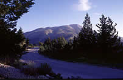

|
|
Von Rhodos-Stadt aus führt uns die erste Etappe nach Ialyssos.
Dieser geschichtsträchtige Ort trägt den Namen von einem Enkel des
Sonnengottes Helios. Neben Lindos und Kamiros zählt Ialyssos zu den ältesten
Städten der Insel. Sehenswert sind die Überreste der Akropolis aus
dem 3. Jh., von denen jedoch nur noch die Ruinen des Tempels
der Athena Polias und des Zeus Polios den Zahn der Zeit überdauert haben.
Einige Kilometer weiter liegt der von Zypressen umgebene Ort Filerimos, in
dem die Kapellen Ritterkreuz und Wappen von Pierre d'Aubusson tragen. Unbedingt sehenswert
ist die Johanniter-Kirche aus dem 15. Jh. sowie das angrenzende byzantinische
Kloster.
Fahren Sie weiter zum Tal der Schmetterlinge, wo
eine üppige Vegetation Raum für eine Vielzahl bunter Falter bietet.
Der Bach, der sich durch das Tal schlängelt, kann an mehreren Stellen auf
Holzbrücken überquert werden. Es ist ein besonders friedlicher Ort - bis
die Touristenbusse morgens eintreffen!
 |
Weiter geht es nach Kamiros,
einer Ausgrabungsstätte aus hellenistischer Zeit. In der alten
dorischen Stadt sind neben den Resten eines Tempels aus
dem 3. Jh. v. Chr. auch öffentliche Bäder aus dem 6. Jh.
v. Chr. und ein Helios, dem Schutzgott der Insel, geweihter Altar
zu sehen.
Der Legende
nach wurde die Stadt
von Althemeneos, einem Enkel des kretischen Königs Minos
gegründet. Später soll auch Tlipolemos, ein Sohn des Herkules, in der
Stadt gelebt haben. Zwei seiner Söhne, Ochimus und Cercaphus, haben den Erzählungen
nach in der Umgebung gewohnt, während die 5 anderen Söhne, Macareus, Actis,
Tenages, Triopas und Candalus die Insel in Richtung
Kleinasien und Ägypten verlassen haben. |
 |
Kamiros ist eine
der ersten drei ursprünglichen Siedlungen. In den Restaurants des
stimmungsvollen Fischerhafens werden ausgezeichnete Fischgerichte serviert. Nicht weit vom
Ort entfernt befindet sich eine Burg, die im 14. Jh. von
Rittern erbaut wurde. |
 |
| Ungefähr
fünfzehn Kilometer weiter empfiehlt sich ein Besuch der Burgruine Kastell Kamiros
und der dazugehörigen Ortschaft mit seinen an den Berghang geschmiegten
weißen Häusern. |
 |
Die Überreste der von
Pierre d'Aubusson erbauten Johanniterburg bei Monolithos bietet keinen besonderen
Reiz. Der Aufstieg lohnt sich jedoch aufgrund des
herrlichen Ausblicks auf das Meer. |
Wenn Sie etwas Zeit
haben, sollten Sie unbedingt in Monolithos übernachten, um am nächsten Morgen
einen Ausflug in das Landesinnere zu unternehmen. Sie haben dann
Gelegenheit, in Sianna eine Pause einzulegen, um Honig und Souma (hochprozentiger
Tresterschnaps) zu probieren, und den höchsten Punkt der Insel Rhodos zu besteigen,
den Berg Attaviros. Im Hinterland gibt es zahlreiche Kapellen
und beschauliche Dörfer zu entdecken.
Sie können ihre Reise natürlich auch in Richtung Süden fortsetzen,
wo Natur und Landschaften in allen Farben leuchten. |
 |
|